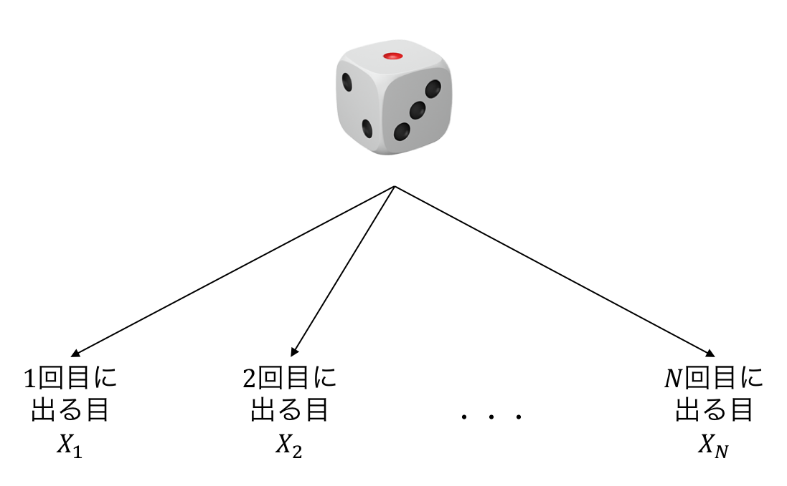
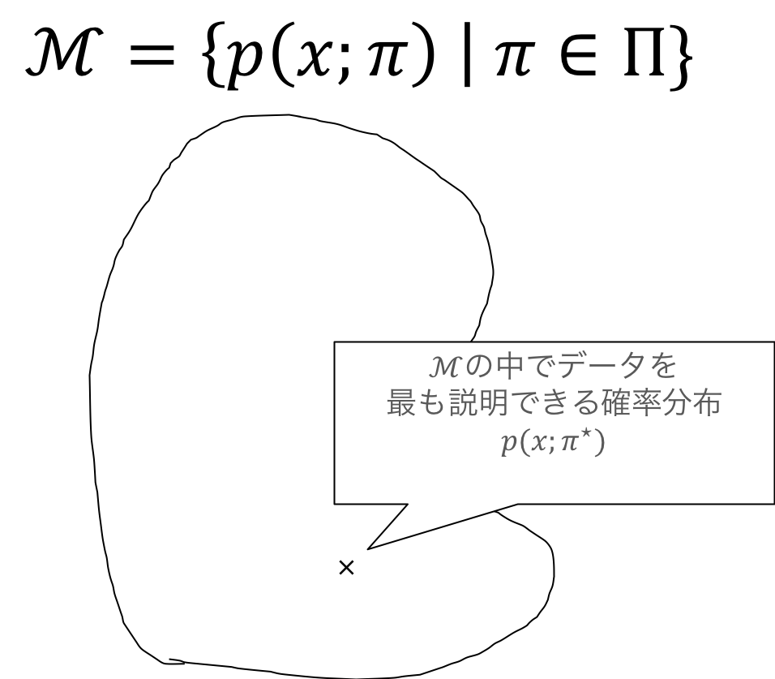
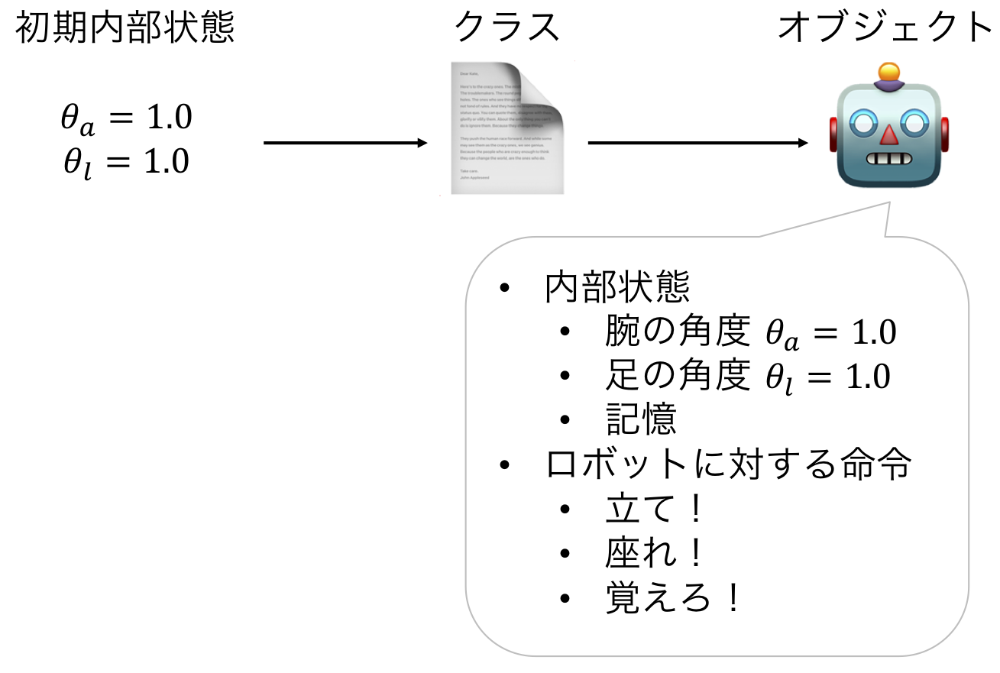
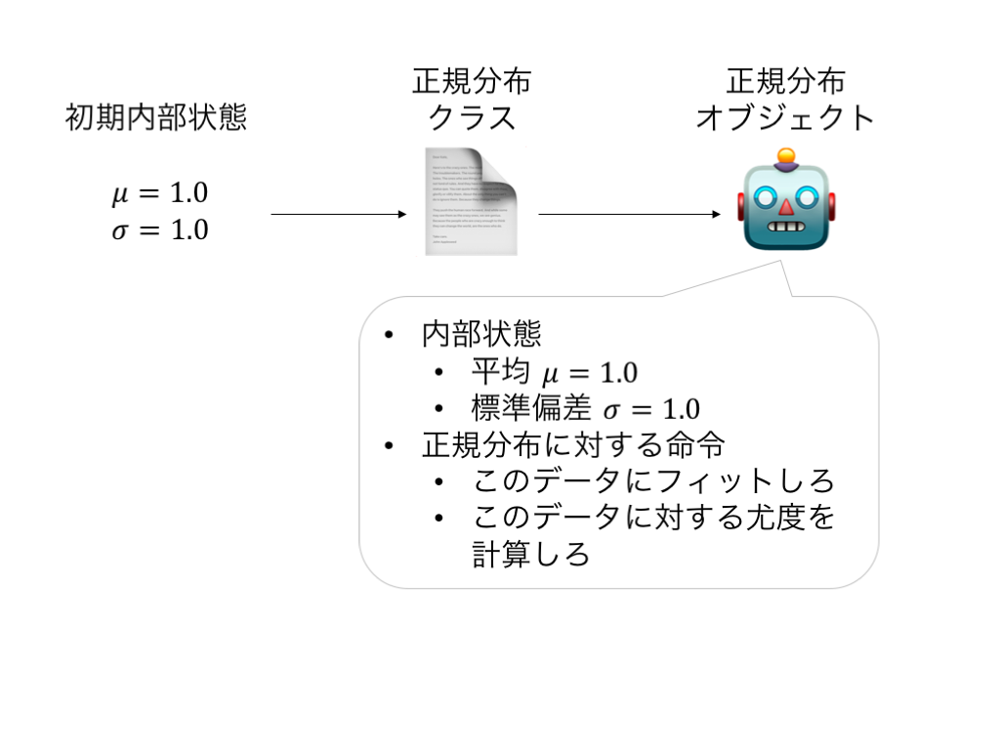

本日の目標¶
- 確率・統計を思い出す
- オブジェクト指向の書き方で最尤推定してみる
確率変数¶
決定的には定まらない観測値をモデル化するのに用いる
- 例1: サイコロを振って出る目
𝑋𝑛∈{1,2,…,6} :𝑛 回目に出た目- 1~6の目のどれが出るかわからない
- 例2: 私の身長
𝑋𝑛∈ℝ+ 𝑋𝑛 :𝑛 回目の測定値- 測るたびに微妙に値が異なる（測定誤差）
- 例3: 人類の身長
𝑋𝑛∈ℝ+ 𝑋𝑛 :𝑛 人目の測定値- 人によって身長は異なる
さいころを振る前にも各回で出る目を確率変数として書ける


試行のたびに得られる観測値は変わる

確率変数の従う規則=確率分布¶
𝑝(𝑋) : 確率変数𝑋 の従う分布- 観測値を入力すると確率を返す関数
- 例えば
𝑝(𝑥)=1/6 (∀𝑥∈{1,2,…,6} ) だとすべての目が1/6の確率で出る、ということを表す - 未知のパラメタを用意しておいて、それを観測値から決定する
確率変数の従う規則は色々な決め方がある¶
事前知識や、手元にあるデータから推定できるか否か、という観点で選ぶ
- 何回目に振ったかは関係なく、すべての目は同一の分布
𝑝(𝑋) に独立に従う（だいたいこれ） - 奇数回目は
𝑝𝑜(𝑋) , 偶数回目は𝑝𝑒(𝑋) に独立に従う - 回数や過去の履歴に依存して目が決まる。つまり
𝑝(𝑋1,𝑋2,…,𝑋𝑁) に従う。𝑁 回振るという試行を何回もやっているならこの分布は推定可能
統計でやりたいこと¶
得られた観測値から、確率変数の従う規則を推測したい
- 得られた観測値 =
𝑁 回さいころを振ったときに{1,5,…,2} という目が出た - 仮定する確率分布（の一例）: すべての目は同一の分布
𝑝(𝑋;𝜋) に独立に従う𝑝(𝑋=𝑘;𝜋)=𝜋𝑘 (𝑘=1,2,…,6) という分布（多項分布）𝜋 を未知なものとして、データから決めたい！

確率モデルのパラメタの決め方¶
- 最尤推定
- 手持ちのサンプルが得られる確率が最大になるようにパラメタを定める
- 気持ち: 手持ちのデータが出てくる確率が高くなかったらどのデータの確率が高いんだ！？
- ベイズ推定
- 推定したいパラメタに事前分布
𝑝(𝜃) を置き、サンプルが得られた元での事後分布𝑝(𝜃∣) を計算する - 事前分布は固定
- 気持ち: サンプルで条件付けを行うとパラメタの範囲がそれっぽいところに狭まる
- 推定したいパラメタに事前分布
最尤推定¶
- モデルの集合:
={𝑝(𝑋;𝜃)∣𝜃∈Θ} - サンプル:
={𝑥1,…,𝑥𝑁} - 独立に同じ分布に従っていると仮定
サンプル
𝜃 の関数ℓ(𝜃) としてみることができる- この時、
ℓ(𝜃) を尤度と呼ぶ
最尤推定量
ただし計算の簡単のため＆実装上の問題から負の対数尤度
なぜ負の対数尤度を使うか¶
- 対数尤度を使う理由
- 掛け算がたし算になる（微分するのが楽になる）
- 対数を取ると小さな値でもコンピュータで扱いやすい（丸め誤差が乗りにくい）
- 特に負の対数を使う理由（強いて言えば...）
- 最適化問題は minimize の形で書かれることが多い
- 情報理論的な解釈（負の対数尤度は、データを送るのに必要なビット数に相当する）
最尤推定まとめ¶
- サンプルが得られる確率（≒尤度）を書き下す
- 負の対数をとって、負の対数尤度を書き下す
- 負の対数尤度が最小になるパラメタ
𝜃̂ を求める
統計モデルを用いた解析の流れ¶
- 確率変数を定める（どの量に対する確率分布が欲しいか？）
- 確率変数の観測値と確率分布の関係を仮定する（すべての観測値が独立同一分布に従う、など）
- 確率分布の集合を仮定する（正規分布、多項分布、など）
- 確率分布の集合から良さげなものを取ってくる（最尤推定、ベイズ推定、など）
オブジェクト指向プログラミング¶
- （とても雑にいうと）オブジェクト単位でプログラムを考える技法
- クラス ≒ 設計図
- オブジェクト = クラスの設計図に従って作られたもの
- クラスはオブジェクトの内部状態やオブジェクトに対して使える命令を規定する
- あるクラスから作られたオブジェクトは、
- オブジェクト固有の内部状態の値を持つ
- クラスで規定された命令を使える

In [2]:
# ロボットをクラスを使って書いてみる
class Robot: # 以下の一段下がっているところがクラス
def __init__(self, state, memory): # 初期状態を与えたときにオブジェクトを作る関数（名前が __init__ と決まっている）
'''
self = オブジェクトを指す。 self.state は、オブジェクトの state という変数を指す。
下の命令は、 self.state に state の値を代入することを表す
'''
self.state = state
self.memory = memory
def stand_up(self): # オブジェクトへの命令の引数には必ず self を入れる
self.state = 'stand up' # 内部状態を更新できる
def sit_down(self):
self.state = 'sit down'
def memorize(self, memory): # オブジェクトへ命令する際に、引数を渡すこともできる
self.memory = memory
def get_state(self):
return self.state
def get_memory(self):
return self.memory
In [3]:
my_robot_1 = Robot('sleep', 'nothing') # クラス名(__init__の引数) と書くとそのクラスのオブジェクトが生成される
print(my_robot_1.get_state()) # オブジェクト.メソッド名(selfを省略した引数たち) と書くと、オブジェクトに命令できる
print(my_robot_1.get_memory()) # 初期化に用いた状態がセットされている
sleep nothing
In [4]:
my_robot_1.stand_up() # 内部状態が更新される
print(my_robot_1.get_state())
my_robot_1.memorize('餃子を食べたい') # 内部状態が更新される
print(my_robot_1.memory)
stand up 餃子を食べたい
In [5]:
my_robot_1 = Robot('stand up', 'nothing')
my_robot_2 = Robot('sleep', 'ラーメン食べたい')
my_robot_1.sit_down() # ロボット1の状態を変えてもロボット2の状態には影響を与えない
print(my_robot_1.get_state())
print(my_robot_2.get_state())
sit down sleep
機械学習に当てはめてみると¶
- クラス=モデル
- 内部状態 = パラメタ
- 命令 = モデルの推定方法
- オブジェクト
- 具体的なパラメタの値を持ったモデル
- データを使ってモデルを推定して内部状態を変える
- 推定し終わった内部状態で予測


一つの答え¶
- 内部状態
- 平均
- 分散共分散行列
- 命令
- データを入力して、パラメタを最尤推定する
- データを入力して、各データの確率密度を計算する
他の答え¶
補助的なものを持っていてもよい
- 内部状態
- 平均
- 分散共分散行列
- 次元
- 命令
- データを入力して、パラメタを最尤推定する
- データを入力して、各データの確率密度を計算する
- 入力の次元のチェック
- 内部状態の更新
バグに気付きやすくするために（後述）¶
- 入力のチェックを行う
- 想定外のことが起こったらエラーを吐くようにする
- 内部状態の更新はメソッドを使う
- 想定外の内部状態にならないようにする
Python での実装¶
まずは正規分布クラスを実装してみよう
In [6]:
import numpy as np
class Gaussian:
def __init__(self, dim):
'''コンストラクタ（みたいなもの）
オブジェクトを作るときに初めに実行される。
内部状態の初期化に使う
'''
self.dim = dim
'''
self = オブジェクトを指す。 self.dim は、オブジェクトの dim という変数を指す。
上の命令は、 self.dim に dim の値を代入することを表す
'''
self.set_mean(np.random.randn(dim)) # オブジェクトの mean という変数をランダムに初期化
self.set_cov(np.identity(dim))
def set_mean(self, mean):
if mean.shape != (self.dim,): # 間違ったサイズの配列で内部状態を更新しようとすると
raise ValueError('input shape inconsistency') # エラーを上げてプログラムを終了させる
self.mean = mean
def set_cov(self, cov):
if cov.shape != (self.dim, self.dim):
raise ValueError('input shape inconsistency')
if np.linalg.eigvalsh(cov)[0] <= 0:
raise ValueError('covariance matrix must be positive semidefinite.')
self.cov = cov
def log_pdf(self, X):
''' 確率密度関数の対数を返す
Parameters
----------
X : numpy.array, shape (sample_size, dim)
Returns
-------
log_pdf : array, shape (sample_size,)
'''
return 0
def fit(self, X):
''' X を使って最尤推定をする
Parameters
----------
X : numpy.array, shape (sample_size, dim)
'''
pass
def sample(self, sample_size):
''' 現状のパラメタを使って `sample_size` のサイズのサンプルを生成する
Parameters
----------------
sample_size : int
Returns
-----------
X : numpy.array, shape (sample_size, dim)
各行は平均 `self.mean`, 分散 `self.cov` の正規分布に従う
'''
pass
log_pdf を書く手順を解説します¶
- 入力は
sample_sizexdimの array - 出力は長さ
sample_sizeの array- 各データの確率密度の対数を計算したい
log_pdf(self, X) の実装¶
−𝐷2log2𝜋−12log|Σ| の計算−12(𝑥−𝜇)⊤Σ−1(𝑥−𝜇) の計算𝑋 がベクトルの時（データが一個の時）𝑋 が行列の時（データが複数個あってそれぞれについて計算したい時）
1. −𝐷2log2𝜋−12log|Σ| の計算¶
np.log, log determinant は np.linalg.slogdet で計算できるので
In [30]:
dim = 5
cov = np.identity(dim) # とりあえず単位行列で計算できるか確かめる
- 0.5 * dim * np.log(2 * np.pi) - 0.5 * np.linalg.slogdet(cov)[1]
Out[30]:
-4.594692666023363
2. −12(𝑥−𝜇)⊤Σ−1(𝑥−𝜇) の計算（データが一個）¶
𝑥−𝜇 を計算するΣ−1(𝑥−𝜇) を計算する−12(𝑥−𝜇)−1Σ−1(𝑥−𝜇) を計算する
In [31]:
dim = 10
x = np.ones(dim)
mean = np.zeros(dim)
cov = 2.0 * np.identity(dim)
centered_x = x - mean
print(centered_x)
[1. 1. 1. 1. 1. 1. 1. 1. 1. 1.]
In [33]:
cov_inv_centered_x = np.linalg.solve(cov, centered_x)
print(cov_inv_centered_x)
[0.5 0.5 0.5 0.5 0.5 0.5 0.5 0.5 0.5 0.5]
In [10]:
-0.5 * (centered_x @ cov_inv_centered_x)
Out[10]:
-2.5
2. −12(𝑥−𝜇)⊤Σ−1(𝑥−𝜇) の計算（データが複数個）¶
𝑥−𝜇 を計算するΣ−1(𝑥−𝜇) を計算する−12(𝑥−𝜇)−1Σ−1(𝑥−𝜇) を計算する
In [46]:
dim = 3
sample_size = 10
X = np.arange(sample_size * dim).reshape(sample_size, dim)
mean = np.ones(dim)
cov = 2.0 * np.identity(dim)
print(X, mean)
[[ 0 1 2] [ 3 4 5] [ 6 7 8] [ 9 10 11] [12 13 14] [15 16 17] [18 19 20] [21 22 23] [24 25 26] [27 28 29]] [1. 1. 1.]
In [54]:
centered_X = X - mean
print(centered_X)
[[-1. 0. 1.] [ 2. 3. 4.] [ 5. 6. 7.] [ 8. 9. 10.] [11. 12. 13.] [14. 15. 16.] [17. 18. 19.] [20. 21. 22.] [23. 24. 25.] [26. 27. 28.]]
In [48]:
cov_inv_centered_X = np.linalg.solve(cov, centered_X.T).T
print(cov_inv_centered_X)
[[-0.5 0. 0.5] [ 1. 1.5 2. ] [ 2.5 3. 3.5] [ 4. 4.5 5. ] [ 5.5 6. 6.5] [ 7. 7.5 8. ] [ 8.5 9. 9.5] [10. 10.5 11. ] [11.5 12. 12.5] [13. 13.5 14. ]]
In [50]:
-0.5 * np.sum(centered_X * cov_inv_centered_X, axis=1)
Out[50]:
array([-5.0000e-01, -7.2500e+00, -2.7500e+01, -6.1250e+01, -1.0850e+02,
-1.6925e+02, -2.4350e+02, -3.3125e+02, -4.3250e+02, -5.4725e+02])
それぞれの項をまとめて関数を作る¶
In [57]:
import numpy as np
class Gaussian:
def __init__(self, dim):
'''コンストラクタ（みたいなもの）
オブジェクトを作るときに初めに実行される。
内部状態の初期化に使う
'''
self.dim = dim
'''
self = オブジェクトを指す。 self.dim は、オブジェクトの dim という変数を指す。
上の命令は、 self.dim に dim の値を代入することを表す
'''
self.set_mean(np.random.randn(dim)) # オブジェクトの mean という変数をランダムに初期化
self.set_cov(np.identity(dim))
def set_mean(self, mean):
if mean.shape != (self.dim,): # 間違ったサイズの配列で内部状態を更新しようとすると
raise ValueError('input shape inconsistency') # エラーを上げてプログラムを終了させる
self.mean = mean
def set_cov(self, cov):
if cov.shape != (self.dim, self.dim):
raise ValueError('input shape inconsistency')
if np.linalg.eigvalsh(cov)[0] <= 0:
raise ValueError('covariance matrix must be positive semidefinite.')
self.cov = cov
def log_pdf(self, X):
''' 確率密度関数の対数を返す
Parameters
----------
X : numpy.array, shape (sample_size, dim)
Returns
-------
log_pdf : array, shape (sample_size,)
'''
centered_X = X - self.mean
cov_inv_centered_X = np.linalg.solve(self.cov, centered_X.T).T
log_pdf = - 0.5 * self.dim * np.log(2 * np.pi) - 0.5 * np.linalg.slogdet(self.cov)[1] - 0.5 * np.sum(centered_X * cov_inv_centered_X, axis=1)
return log_pdf
In [63]:
my_gaussian = Gaussian(2)
X = np.zeros((10, 2))
my_gaussian.set_mean(np.zeros(2))
my_gaussian.log_pdf(X)
Out[63]:
array([-1.83787707, -1.83787707, -1.83787707, -1.83787707, -1.83787707,
-1.83787707, -1.83787707, -1.83787707, -1.83787707, -1.83787707])
実装の手順まとめ¶
- 実装したいものを数式で書き起こす
- 数式を計算するには何をどの順番で計算したらいいかを考える
- なるべく細かくする
- 全然わからないときは、実装したいものを単純化したもので考えるのも手
- それぞれの手順を実装して、手元で動くか確かめる
- 配列の大きさのチェックをする
- できれば検算も
- 組み合わせてクラスに実装する
課題¶
fitを完成させよ。- 入力は
sample_sizexdimの arrayX self.meanとself.covをXで計算した最尤推定量で更新する
- 入力は
sampleを完成させよ。- 入力は
sample_size - 出力は平均
self.mean、分散self.covの正規分布に従う乱数
- 入力は
In [17]:
import numpy as np
class Gaussian:
def __init__(self, dim):
'''コンストラクタ（みたいなもの）
オブジェクトを作るときに初めに実行される。
内部状態の初期化に使う
'''
self.dim = dim
'''
self = オブジェクトを指す。 self.dim は、オブジェクトの dim という変数を指す。
上の命令は、 self.dim に dim の値を代入することを表す
'''
self.set_mean(np.random.randn(dim)) # オブジェクトの mean という変数をランダムに初期化
self.set_cov(np.identity(dim))
def log_pdf(self, X):
''' 確率密度関数の対数を返す
Parameters
----------
X : numpy.array, shape (sample_size, dim)
Returns
-------
log_pdf : array, shape (sample_size,)
'''
if X.shape[1] != self.dim: # 入力の形をチェックしています
raise ValueError('X.shape must be (sample_size, dim)')
return -0.5 * np.sum((X - self.mean) * (np.linalg.solve(self.cov, (X - self.mean).T).T), axis=1) \
-0.5 * self.dim * np.log(2.0 * np.pi) - 0.5 * np.linalg.slogdet(self.cov)[1]
def fit(self, X):
''' X を使って最尤推定をする
Parameters
----------
X : numpy.array, shape (sample_size, dim)
'''
if X.shape[1] != self.dim: # 入力の形をチェックしています
raise ValueError('X.shape must be (sample_size, dim)')
self.set_mean(np.mean(X, axis=0))
self.set_cov((X - self.mean).T @ (X - self.mean) / X.shape[0])
def sample(self, sample_size):
''' 現状のパラメタを使って `sample_size` のサイズのサンプルを生成する
Parameters
----------------
sample_size : int
Returns
-----------
X : numpy.array, shape (sample_size, dim)
各行は平均 `self.mean`, 分散 `self.cov` の正規分布に従う
'''
return np.random.multivariate_normal(self.mean, self.cov, size=sample_size)
def set_mean(self, mean):
if mean.shape != (self.dim,):
raise ValueError('input shape inconsistency')
self.mean = mean
def set_cov(self, cov):
if cov.shape != (self.dim, self.dim):
raise ValueError('input shape inconsistency')
if np.linalg.eigvalsh(cov)[0] <= 0:
raise ValueError('covariance matrix must be positive semidefinite.')
self.cov = cov
ポイント¶
- 逆行列を使わず、線型方程式を解く
- for文を使わず、行列演算で頑張る
∑𝑛=1𝑁𝑥𝑛𝑥⊤𝑛=[𝑥1𝑥2…𝑥𝑁]⎡⎣⎢⎢⎢⎢⎢𝑥⊤1𝑥⊤2⋮𝑥⊤𝑁⎤⎦⎥⎥⎥⎥⎥
以下のように分解してみるとわかる
クラスの使い方¶
- オブジェクトを作る
In [18]:
my_model = Gaussian(2) # my_model というオブジェクトが出来た
In [19]:
print(my_model.mean, my_model.cov) # 平均、共分散行列を持っている
[0.06926293 0.64405604] [[1. 0.] [0. 1.]]
In [20]:
my_model_1 = Gaussian(2) # 他のオブジェクトも作れる
print(my_model_1.mean, my_model_1.cov) # 平均はランダムに初期化されるため my_model とは異なる
[-0.93757404 0.30236143] [[1. 0.] [0. 1.]]
- 命令する（メソッドを実行する）
In [21]:
X = np.random.multivariate_normal(np.array([1.0, 2.0]), np.array([[1.0, 0.9], [0.9, 4.0]]), size=100)
import matplotlib.pyplot as plt
plt.scatter(X[:, 0], X[:, 1])
plt.show()
<matplotlib.figure.Figure at 0x107eab358>
In [22]:
my_model.fit(X) # X で最尤推定をして、 mean, cov を更新する
print(my_model.mean, my_model.cov)
[1.01330311 1.7047761 ] [[1.03724927 0.90638818] [0.90638818 3.468452 ]]
In [23]:
# サンプルサイズを大きくすると、真値に近くなる
X = np.random.multivariate_normal(np.array([1.0, 2.0]), np.array([[1.0, 0.9], [0.9, 4.0]]), size=10000)
import matplotlib.pyplot as plt
plt.scatter(X[:, 0], X[:, 1])
plt.show()
my_model.fit(X)
print(my_model.mean, my_model.cov)
![]()
[0.9831826 1.97393797] [[1.02144834 0.9293782 ] [0.9293782 4.04855921]]
In [24]:
# サンプリングを試してみる
sample = my_model.sample(10000)
plt.scatter(sample[:, 0], sample[:, 1])
plt.show()
![]()
In [25]:
my_model.mean = np.array([0, 0, 0]) # オブジェクトの変数に直接アクセスすることもできるが、おかしな値に設定してもエラーが出ない
In [26]:
my_model.set_mean(np.array([0, 0, 0])) # メソッドの中で配列のサイズのチェックを行なっているため、ちゃんとエラーが出て止まる
--------------------------------------------------------------------------- ValueError Traceback (most recent call last) <ipython-input-26-d630bfc41f7b> in <module>() ----> 1 my_model.set_mean(np.array([0, 0, 0])) # メソッドの中で配列のサイズのチェックを行なっているため、ちゃんとエラーが出て止まる <ipython-input-17-1dcee8c239e9> in set_mean(self, mean) 58 def set_mean(self, mean): 59 if mean.shape != (self.dim,): ---> 60 raise ValueError('input shape inconsistency') 61 self.mean = mean 62 ValueError: input shape inconsistency
In [ ]:
my_model.set_mean(np.array([0, 0]))
my_model.set_cov(np.identity(2))
np.exp(my_model.log_pdf(np.array([[0,0]]))) # 1次元の Normal distribution だと 0.4 くらいなので、二次元だと0.16くらいのはず
ここまでのまとめ¶
- 統計モデルはクラスを使って書く
- 内部状態 = モデルのパラメタ、ハイパーパラメタ
- メソッド = パラメタ推定、予測、入力チェック、内部状態更新
- メソッドの入力や内部状態の更新時に、データの型チェックを行う
- バグの早期発見につながる
演習¶
- さいころの目
- 前回作った PCA をクラスの形で書き換えよ
In [ ]:
class Dice:
def __init__(self, n_faces):
self.n_faces = n_faces
self.set_prob(np.ones(self.n_faces) / self.n_faces)
def set_prob(self, prob_array):
if not np.allclose(prob_array.sum(), 1.0):
raise ValueError('prob_array must be normalized.')
if prob_array.shape != (self.n_faces,):
raise ValueError(f'prob_array must be of shape ({self.n_faces},)')
self.prob_array = prob_array
def fit(self, X):
'''
Parameters
----------
X : array, shape (n_faces, )
X[i] は i 番目の目が出た回数を表す
'''
self.set_prob(X / X.sum())
def sample(self, n_trials):
'''
Parameters
----------
n_trials : int
さいころを振る回数
Returns
------
X : array, shape (n_faces,)
X[i] は i 番目の目が出た回数を表す
'''
return np.random.multinomial(n_trials, self.prob_array)
In [ ]:
from scipy.linalg import eigh
class PCA:
def __init__(self, input_dim, n_components):
self.input_dim = input_dim
self.n_components = n_components
self.set_encoder(np.eye(self.input_dim)[:self.n_components, :])
def set_encoder(self, encoder):
if encoder.shape != (self.n_components, self.input_dim):
raise ValueError(f'encoder must have shape {(self.n_components, self.input_dim)}')
if np.abs(encoder @ encoder.transpose() - np.eye(self.n_components)).max() > 1e-4:
raise ValueError('encoder must be orthonormal.')
self.encoder = encoder
def fit(self, X):
eig_val, eig_vec = eigh(X.T @ X)
self.set_encoder(eig_vec[:, -self.n_components:].transpose())
def transform(self, X):
return X @ self.encoder.transpose()
def inverse_transform(self, z):
return z @ self.encoder
In [ ]:
import matplotlib.pyplot as plt
from sklearn.datasets import fetch_olivetti_faces
# データを取得
dataset = fetch_olivetti_faces()
num_examples, row_size, col_size = dataset['images'].shape
X = dataset['data']
# 平均0にしておく（しなくてもまあ大丈夫だけど）
X_mean = X.mean(axis=0)
X_centered = X - X_mean
n_components=20
pca = PCA(X.shape[1], n_components)
pca.fit(X_centered)
In [ ]:
z = pca.transform(X_centered)
X_rec = pca.inverse_transform(z) + X_mean
idx = 190
f, (ax1, ax2) = plt.subplots(1, 2)
ax1.imshow(dataset['images'][idx], cmap=plt.cm.gray) # 左が元の画像
ax2.imshow(X_rec[idx].reshape(row_size, col_size), cmap=plt.cm.gray) # 右が再構成画像
plt.show()
In [ ]:
応用計量分析２（第5回）担当教員: 梶野 洸（かじの ひろし）